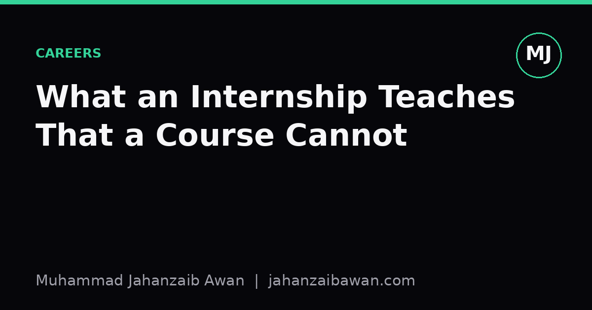

What an Internship Teaches That a Course Cannot
Courses teach you to model. Internships teach you to survive the mess before modelling even starts, and that gap is where most of the real learning happens.

The dataset is never ready for you
Every course dataset I have worked with arrives in a tidy state: a single CSV, sensible column names, a target variable clearly marked, maybe a note about missing values. This is useful for teaching algorithms, but it quietly teaches the wrong lesson about where effort goes. In a real internship, the first two weeks are often spent just figuring out which of the seventeen tables in the warehouse actually contains the ground truth, and why three different teams have three different definitions of 'active customer'.
Consider a concrete case: you are asked to predict churn for a subscription service. The course version gives you a table with a churn flag already computed. The internship version gives you raw event logs, billing records updated on different schedules, and a churn definition that changes depending on who you ask, finance says 60 days without payment, product says 30 days without login. You have to decide, document, and defend a definition before you can write a single line of modelling code. That decision affects every downstream number, and nobody tells you it was the hard part until you are the one making it.
This matters because the skill of interrogating a problem before touching a model is almost impossible to teach in a classroom setting, where the ambiguity has already been resolved by whoever built the assignment. An internship puts you in the room where that resolution happens, or more often, where it does not happen cleanly and you have to make a defensible judgement call under time pressure.
Leakage hides in places no textbook mentions
Courses teach data leakage as a tidy concept: do not let your test set influence your training set, keep a holdout, use cross-validation correctly. These rules are correct but they describe the easy cases. The hard cases show up when you are working with real, timestamped, operationally messy data, and they rarely look like the textbook examples.
Here is one that is easy to miss: you are building a model to flag fraudulent transactions, and one of your features is 'number of chargebacks on this account in the last 90 days'. That sounds reasonable until you realise the chargeback count is updated retrospectively, sometimes weeks after the transaction in question, meaning the value you see today did not exist at the time the transaction occurred. If you train on the current value, your model learns from information it would never have had in production, and your offline accuracy of, say, 94 percent collapses to something closer to 70 percent once deployed, because the feature simply is not available at prediction time.
A course exercise will not expose this because the data has already been sanitised by the time it reaches you. An internship puts you next to the systems that generate the data, where you see the update timestamps, the batch jobs, the delays, and you learn to ask 'what did I actually know at this moment' as an instinct rather than a checklist item. That instinct, once built, transfers to every future project regardless of domain.
Stakeholders do not care about your F1 score
In coursework, the audience for your result is a marker who understands precision, recall, and why accuracy is a poor metric on imbalanced data. In an internship, the audience is often a product manager who wants to know whether the model will reduce support tickets next quarter, and who has no particular interest in the confusion matrix you are proud of.
This forces a different kind of rigour: translating a statistical result into a decision. Suppose your model for flagging at-risk customers has a precision of 40 percent and a recall of 70 percent at the threshold you have chosen. A course would ask you to report these numbers and perhaps plot a precision-recall curve. An internship asks something harder: if the retention team can only call 200 customers a week, and each false positive wastes a call that could have gone to a genuinely at-risk customer, is 40 percent precision actually good enough, or does the threshold need to move even at the cost of recall? Answering that requires sitting with the team who makes the calls, understanding their capacity, and sometimes admitting that your elegant model needs a much blunter, more conservative threshold than the one that maximises a textbook metric.
You also learn, often uncomfortably, that a well-tuned baseline communicated clearly can beat a sophisticated model communicated poorly. A logistic regression with three interpretable features that the team trusts and can act on will often outperform, in organisational terms, a gradient-boosted ensemble nobody understands well enough to deploy with confidence. Courses rarely create the conditions for this lesson because there is no stakeholder to disappoint; the only reader is the grader, and the grader rewards complexity over clarity.
The practical takeaway
If you are choosing between polishing another Kaggle-style project and taking an internship, the internship teaches something a course structurally cannot: the discipline of operating under ambiguity, with real constraints, in front of people who will act on what you tell them. The specific skills, SQL across messy schemas, defending a metric choice in a meeting, catching leakage in a live pipeline, are transferable precisely because they were learned under pressure rather than in a sandbox.
My honest advice is to treat the internship as a chance to practise the parts of the job that never show up on a syllabus: writing down your assumptions before you model, asking who will actually use the output, and checking, every single time, whether a feature could only exist in hindsight. Those three habits, more than any single algorithm, are what separate someone who has completed a course from someone who can be trusted with a real decision.